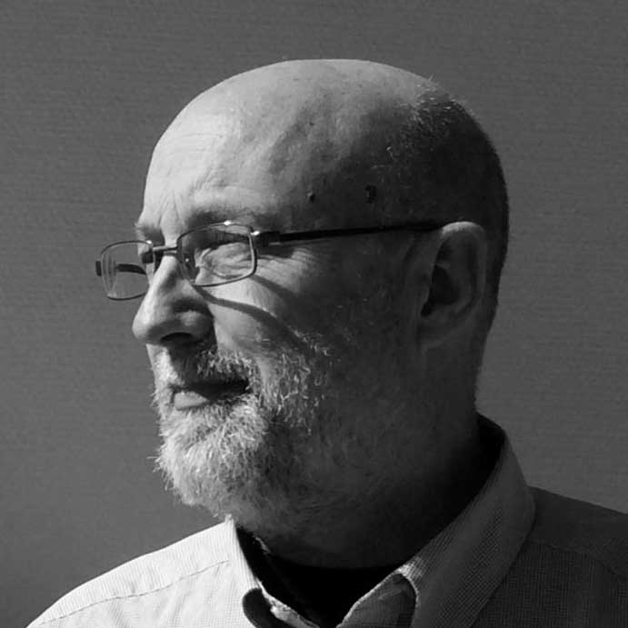
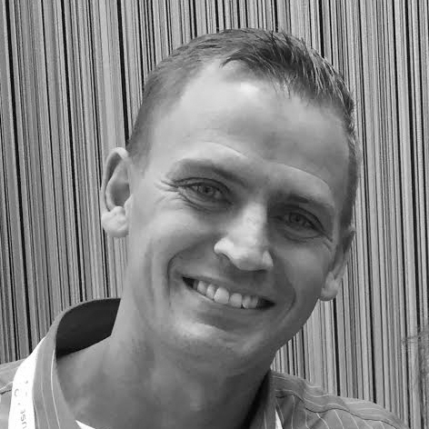

Continuous Discovery: The Power of Pure Agile
Keynote
The strength of Agile lies in the simplicity and clarity of the Values and Principles expressed in the Agile Manifesto. It can empower the people doing software development in any organization, and enable us to make rapid strides to the “land of better”.
Software development is an activity of discovery. We must take action to reveal the reality of the problem at hand, the elements of the solution, and to reveal the work that is needed to design and create the software required. This is the process of discovery.
As leaders, activators, and influencers of change in the companies we work with, it's up to us to understand the philosophy of Agile and how it embraces and empowers the process of discovery.
I'll share my thinking about “Pure Agile”, and how I use it in my daily work to enhance Continuous Discovery, Learning, and Growth in the teams and companies I work with. Let's explore together and discover the path to the future we want to create.

Woody Zuill, a Senior Consultant, Trainer, and Agile Coach, has been programming computers for 30+ years. Over the last 15+ years he has worked as an Extreme Programmer, Agile Coach, Application Development Manager, and Trainer. He believes that code must be simple, clean, and maintainable so that we can realize the Agile promise of Responding to Change, and that we must constantly “Reflect, tune, and adjust”. His passion is for tackling code that is hard to maintain and cleaning, refactoring, and bringing it back into a manageable state. He is a pioneer of the Mob Programming approach to teamwork in software development, and is considered one of the founders of the “#NoEstimates” discussion on Twitter.
Catch Dancing Ponies — try Approval Testing
I heard about one Continuous Delivery team where someone had put dancing ponies on their site as a joke. Unfortunately the customers weren't too impressed when they saw them. Perhaps unsurprisingly, none of the acceptance tests checked for dancing ponies...
The best approach for a unit test — assert only specific things — may not work as well for testing whole features. Approval testing takes the opposite standpoint — everything is interesting, and will be checked.
In this talk I’ll explain how it works in practice, and our experiences using Approval Testing at Pagero.

Emily Bache is an independent consultant specializing in automated testing and agile methods. With over 15 years of experience working as a software developer in organizations as diverse as multinational corporation to small startup, she has learnt that to be truly agile, teams need to learn use agile engineering practices. Emily is the author of ”The Coding Dojo Handbook: a practical guide to creating a space where good programmers can become great programmers” and loves to coach and teach developers about Clean Code, Test Driven Development, Refactoring, and more. Emily speaks regularly at international events such as Agile Testing Days, XP2013, ACCU, and recently gave a keynote address at “Test Automation Day” in the Netherlands.
Pia–Maria will speak about Agile HR and Agile Leadership - what is it and how can we increase the cooperation between HR and IT and facilitate for HR to understand the agile context.
The talk will also bring up principles, practices and tools for teams and managers to work in ways that simplify for people to be happy and perform together towards company goals and vision.
Some of todays traditional HR concepts do not make sense in an agile context (succession planning and career management for example) and the gap between difference in mindset and vocabulary between HR and IT is huge.
Pia-Maria's hope is to be able to bridge the gap and create a common platform for a better cooperation by increasing the insight into the HR world.

Pia-Maria is the founder and owner of GreenBullet, and specialize in Agile HR, Agile leadership and Talent Management. She is also the founder of the network and the conference Agile People Sweden. Pia-Maria has worked as a consultant with many of Sweden's largest companies, helping them to implement Talent management processes and solutions, always spiced with an agile mindset. She is a People Management consultant and devoted change agent with an enterprise perspective. Her main focus is to contribute to creating organizations where people perform better and feel engaged. Agile leadership and agile frameworks are the best ways to create successful change, in her opinion. Her main drive is to see the movement from one state to another in a company, contributing by making that change successful both from a financial and human perspective. Her vision is to create customer value and have fun at the same time!
In the agile community we have come far in showcasing continuous delivery of working, valuable software as a successful delivery model. By doing so we are moving away from the short term, project centric delivery model that have been the ruling paradigm for so long. Unfortunately this paradigm still influences the strategic change management models being used when organisations change their way of working and adopt agile. The project centric delivery model as a change strategy goes against core agile principles of continuous improvements and puts the entire agile adoption work at risk.
In this talk we will explore the signals that is a sure deal for an unsustainable agile adaption based on the project centric delivery model. We will showcase our experience in trying out a different change strategy suited for complex endevours based on elements of Lean merged with Bridges Transition model. We will present how this agile change strategy is applied to the case of TeliaSonera IT Sweden, a large scale enterprise change affecting employees, vendors and business stakeholders within TeliaSonera. Finally we will share some of the signals we are picking up in this ongoing work that tells us that we are doing the right thing - right.

Jonas Jaconelli is an agile coach at Softhouse Consulting AB with over 10 years of experience in transformation work in large scale organisations. He is all too knowledgeable in how the strive towards creating learning organisations is blocked by too much short term, project centric thinking.
Bea Düring is an change coach at Softhouse Consulting AB with over 15 years of experience in different aspects of agile and change in particular. She is supporting Telia Sonera IT Sweden in their journey towards agile and she is enjoying her work immensely.
Emma Bjuvefors knows the all the ins and outs of TeliaSonera IT Sweden and is working as a delivery team manager. She is passionate about Lean and finding smarter ways to deliver result with emphasis on proud coworkers being allowed to finally do their job.